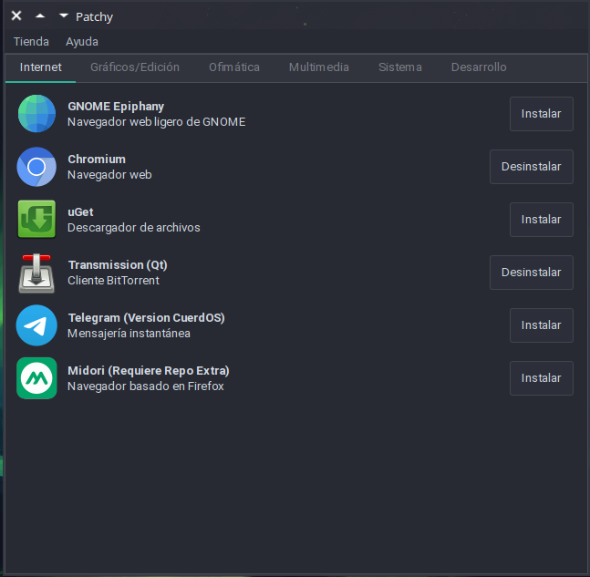

Patchy - 1.0a (Elena)
Patchy es una minitienda o botique de software de primer uso en CuerdOS GNU/Linux. Con una interfaz gráfica amigable basada en Python 3, GTK y Qt, permite instalar aplicaciones recomendadas por el equipo de CuerdOS.
Paquete de instalación no se encuentra aún disponible.
Características
- Interfaz intuitiva y amigable.
- Integración con CuerdOS GNU/Linux.
- Fácil instalación y configuración.
- Acceso rápido a aplicaciones.
- Dependencias gestionadas.
- Soporte para Ingles (English).
- Diseño modular.
- Compatible con entornos de escritorio populares.
- Completamente gratuito y de código abierto.
Requisitos
- Debian 12+ o cualquier derivado compatible.
- GTK 3.0 o Qt 5+
- Nala instalado en el sistema. (En CuerdOS ya esta instalado)
- Python 3.x
Uso
- Abre la aplicación desde el menú o ejecuta
python3 patchy.py. - Busca una aplicación.
- Le das a Instalar y proporciona tu contraseña (No registra contraseñas).
- Esperas a que el programa se encuentre instalado y listo.
Licencia
Este proyecto está licenciado bajo la GPLv3. Puedes consultar el archivo LICENSE para más información.
Repositorio: Debbie-de-Debs